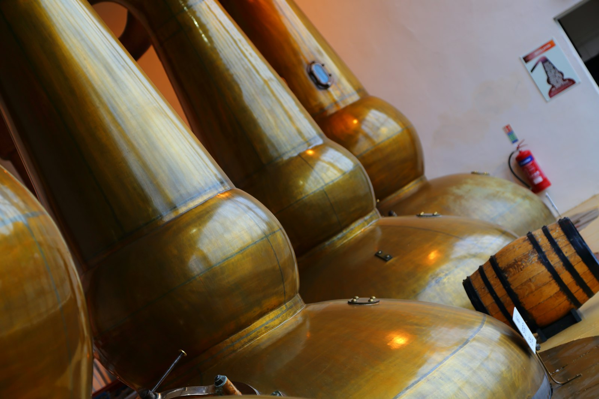
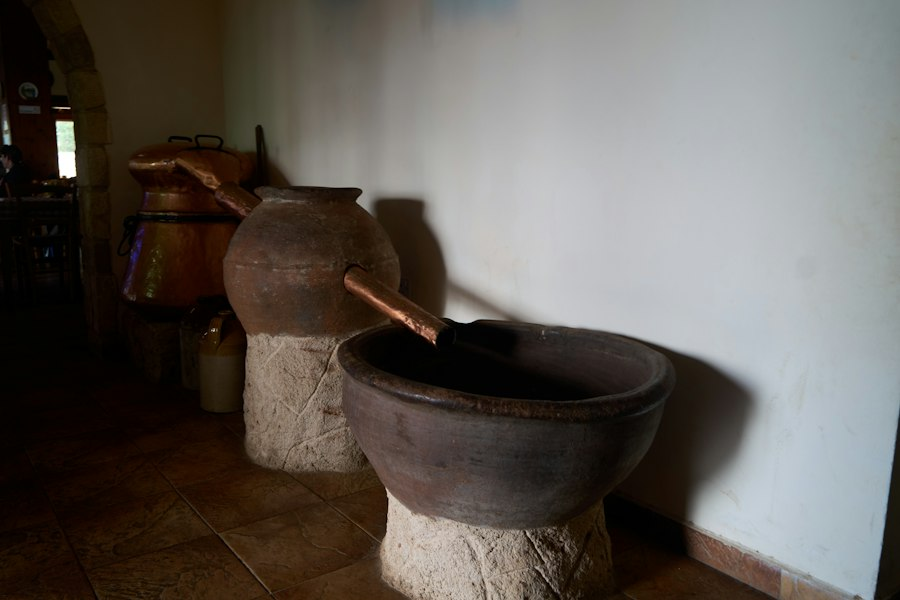
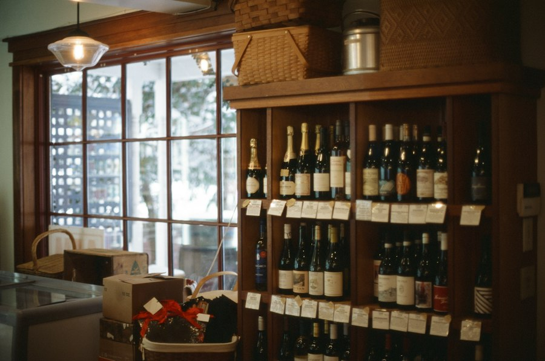

Monitoreo de producción
Visualiza en tiempo real las variables clave del proceso de elaboración y detecta condiciones anómalas a tiempo.
Destilatech centraliza el monitoreo de producción, la trazabilidad de lotes, la gestión de inventario y las operaciones comerciales del ecosistema peruano del pisco, con análisis predictivo que te ayuda a decidir cuándo reponer antes de quedarte sin stock.
Sin tarjeta de crédito para empezar. Cancela cuando quieras.


Supervisa condiciones de elaboración en tiempo real, mantén trazabilidad completa de cada lote y controla tu inventario de insumos y producto terminado sin depender de cuadernos ni hojas sueltas.

Reemplaza el cuaderno o el Excel por un control de inventario simple desde el celular, con alertas antes de que un producto se agote y una gestión de pedidos más ágil.
Cuatro pilares que resuelven los problemas más frecuentes de productores y comercializadores de pisco.
Visualiza en tiempo real las variables clave del proceso de elaboración y detecta condiciones anómalas a tiempo.
Controla insumos y producto terminado en un solo lugar, con registros claros y accesibles desde cualquier dispositivo.
Recibe notificaciones antes de que un producto se agote o una condición de producción salga de rango.
Analiza tendencias de consumo y producción para anticipar cuándo y cuánto reponer.
Todos los planes incluyen 14 días de prueba gratuita, sin compromiso.
S/ 60/mes
Ideal para bodegas o licorerías pequeñas que recién digitalizan su inventario.
S/ 110/mes
Para productores y comercializadores en crecimiento con varios lotes o puntos de venta.
S/ 200/mes
Para operaciones múltiples que requieren soporte prioritario e integración avanzada.
Fuente: Ministerio de la Producción, 2025.
Elige tu perfil para ver las funcionalidades pensadas para ti.
Sensores simulados registran temperatura, humedad y otras variables clave del proceso de destilación en tiempo real.
Sigue cada lote desde la materia prima hasta el embotellado, con historial completo y exportable.
Recibe alertas automáticas cuando una variable de producción se sale del rango esperado.
Registra entradas y salidas de productos en segundos, sin curva de aprendizaje ni planillas complicadas.
Organiza pedidos a proveedores y da seguimiento a su estado desde un solo panel.
Recibe avisos antes de quedarte sin un producto, para no perder ventas por desabastecimiento.
Prueba Destilatech gratis durante 14 días. No necesitas tarjeta de crédito.
Prueba gratis 14 días